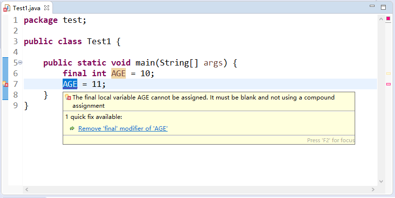

首页 > Java教程 > Java程序设计基础
Java常量：Java常量的定义和分类
常量是指在程序的整个运行过程中值保持不变的量。在这里要注意常量和常量值是不同的概念，常量值是常量的具体和直观的表现形式，常量是形式化的表现。通常在程序中既可以直接使用常量值，也可以使用常量。
下面我们来系统地认识一下 Java 中的常量值，以及定义常量的方法。
整型（int）常量默认在内存中占 32 位，是具有整数类型的值，当运算过程中所需值超过 32 位长度时，可以把它表示为长整型（long）数值。长整型类型则要在数字后面加 L 或 1， 如 697L，表示一个长整型数，它在内存中占 64 位。
Java 实型常量默认在内存中占 64 位，是具有双精度型（double）的值。如果考虑到需要节省运行时的系统资源，而运算时的数据值取值范围并不大且运算精度要求不太高的情况，可以把它表示为单精度型（float）的数值。
单精度型数值一般要在该常数后面加 F 或 f，如 69.7f，表示一个 float 型实数，它在内存中占 32 位（取决于系统的版本高低）。
除了以上所述形式的字符常量值之外，Java 还允许使用一种特殊形式的字符常量值来表示一些难以用一般字符表示的字符，这种特殊形式的字符是以开头的字符序列，称为转义字符。
注意：这里表示字符和字符串的单引号和双引号都必须是英语输入环境下输入的符号。
表 1 列出了 Java 中常用的转义字符及其表示的意义。
Java 语言使用 final 关键字来定义一个常量，其语法如下所示：
final 关键字表示最终的，它可以修改很多元素，修饰变量就变成了常量。例如，以下语句使用 final 关键字声明常量。
代码第 3 行的是声明静态常量，使用在 final 之前 public static 修饰。public static 修饰的常量作用域是全局的，不需要创建对象就可以访问它，在类外部访问形式为 HelloWorld. PI。这种常量在编程中使用很多。
代码第 5 行声明成员常量，作用域类似于成员变量，但不能修改。代码第 9 行声明局部常量，作用域类似于局部变量，但不能修改。
在定义常量时，需要注意如下内容：
当常量被设定后，一般情况下不允许再进行更改，如果更改其值将提示错误。例如，如下图中定义常量 AGE 并赋予初值，如果更改 AGE 的值，那么在编译时将提示不能重合赋值错误。
下面我们来系统地认识一下 Java 中的常量值，以及定义常量的方法。
常量值
常量值又称为字面常量，它是通过数据直接表示的，因此有很多种数据类型，像整型和字符串型等。下面一一介绍这些常量值。整型常量值
Java 的整型常量值主要有如下 3 种形式。- 十进制数形式：如 54、-67、0。
- 八进制数形式：Java 中的八进制常数的表示以 0 开头，如 0125 表示十进制数 85，-013 表示十进制数 -11。
- 十六进制数形式：Java 中的十六进制常数的表示以 0x 或 0X 开头，如 0x100 表示十进制数 256，-0x16 表示十进制数 -22。
整型（int）常量默认在内存中占 32 位，是具有整数类型的值，当运算过程中所需值超过 32 位长度时，可以把它表示为长整型（long）数值。长整型类型则要在数字后面加 L 或 1， 如 697L，表示一个长整型数，它在内存中占 64 位。
实型常量值
Java 的实型常量值主要有如下两种形式。- 十进制数形式：由数字和小数点组成，且必须有小数点，如 12.34、-98.0。
- 科学记数法形式：如 1.75e5 或 32&E3，其中 e 或 E 之前必须有数字，且 e 或 E 之后的数字必须为整数。
Java 实型常量默认在内存中占 64 位，是具有双精度型（double）的值。如果考虑到需要节省运行时的系统资源，而运算时的数据值取值范围并不大且运算精度要求不太高的情况，可以把它表示为单精度型（float）的数值。
单精度型数值一般要在该常数后面加 F 或 f，如 69.7f，表示一个 float 型实数，它在内存中占 32 位（取决于系统的版本高低）。
布尔型常量值
Java 的布尔型常量只有两个值，即 false（假）和 true（真）。字符型和字符串常量值
Java 的字符型常量值是用单引号引起来的一个字符，如 'e'、E'。需要注意的是，Java 字符串常量值中的单引号和双引号不可混用。双引号用来表示字符串，像 "11"、"d" 等都是表示单个字符的字符串。除了以上所述形式的字符常量值之外，Java 还允许使用一种特殊形式的字符常量值来表示一些难以用一般字符表示的字符，这种特殊形式的字符是以开头的字符序列，称为转义字符。
注意：这里表示字符和字符串的单引号和双引号都必须是英语输入环境下输入的符号。
表 1 列出了 Java 中常用的转义字符及其表示的意义。
| 转义字符 | 说明 |
|---|---|
| \ddd | 1~3 位八进制数所表示的字符 |
| \uxxxx | 1~4 位十六进制数所表示的字符 |
| \' | 单引号字符 |
| \" | 双引号字符 |
| \\ | 双斜杠字符 |
| \r | 回车 |
| \n | 换行 |
| \b | 退格 |
| \t | 横向跳格 |
定义常量
常量不同于常量值，它可以在程序中用符号来代替常量值使用，因此在使用前必须先定义。常量与变量（在《Java变量的声明和初始化》一节中讲解）类似也需要初始化，即在声明常量的同时要赋予一个初始值。常量一旦初始化就不可以被修改。它的声明格式为：Java 语言使用 final 关键字来定义一个常量，其语法如下所示：
final dataType variableName = value
其中，final 是定义常量的关键字，dataType 指明常量的数据类型，variableName 是变量的名称，value 是初始值。final 关键字表示最终的，它可以修改很多元素，修饰变量就变成了常量。例如，以下语句使用 final 关键字声明常量。
public class HelloWorld {
// 静态常量
public static final double PI = 3.14;
// 声明成员常量
final int y = 10;
public static void main(String[] args) {
// 声明局部常量
final double x = 3.3;
}
}
常量有三种类型：静态常量、成员常量和局部常量。代码第 3 行的是声明静态常量，使用在 final 之前 public static 修饰。public static 修饰的常量作用域是全局的，不需要创建对象就可以访问它，在类外部访问形式为 HelloWorld. PI。这种常量在编程中使用很多。
代码第 5 行声明成员常量，作用域类似于成员变量，但不能修改。代码第 9 行声明局部常量，作用域类似于局部变量，但不能修改。
在定义常量时，需要注意如下内容：
- 在定义常量时就需要对该常量进行初始化。
- final 关键字不仅可以用来修饰基本数据类型的常量，还可以用来修饰对象的引用或者方法。
- 为了与变量区别，常量取名一般都用大写字符。
当常量被设定后，一般情况下不允许再进行更改，如果更改其值将提示错误。例如，如下图中定义常量 AGE 并赋予初值，如果更改 AGE 的值，那么在编译时将提示不能重合赋值错误。

关注公众号「站长严长生」，在手机上阅读所有教程，随时随地都能学习。内含一款搜索神器，免费下载全网书籍和视频。

微信扫码关注公众号